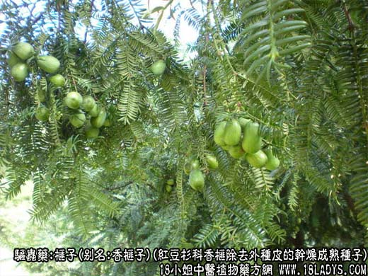
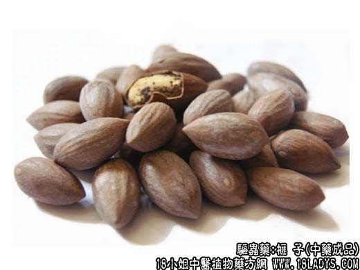
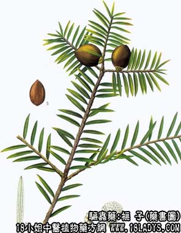

榧子为少常用中药。始载《名医别录》，原名榧实。
别名：香榧子、木榧子、大榧子。
来源：为红豆杉科常绿乔木香榧除去外种皮的干燥成熟种子。野生或栽培。
产地：主产于浙江昌化、临安等地，此外江苏、福建、湖南、安徽、江西等地亦有生产。
性状鉴别：榧子呈卵圆形，长2～4厘米，中部直径1.2～2.5厘米，底端钝圆，先端突尖。内种皮土棕色，具不规则凸起的纵棱多条，质坚硬而脆，厚约1毫米，易砸碎。内含种仁一粒，外被棕褐色或乌黑色膜质的外胚乳，皱缩不平滑。内胚乳厚大。质坚硬，断面油浸养黄白色。气微，味香淡微涩。以个大，壳薄，种仁饱满者为佳。
主要成分：含脂肪油、鞣质、挥发油。
药理作用：驱虫。为中药广谱驱虫药，对驱钩虫、蛲虫、绦虫，都有一定效果。
炮制：生用。
性味：甘、涩、平。
归经：入脾、大肠经。
功能：杀虫，消积。
主治：虫积腹痛，食积胀满，便秘等症。
临床应用：榧子药性温和、药力可靠，广泛用于驱除多种肠道寄生虫。
治钩虫病，配百部等，方如榧子杀虫丸，疗效较确定（对绦虫也有驱虫作用）。又可配使君子，对蛔虫、钩虫复合感染，有一定疗效，小儿黄瘦而有虫积腹痛者可用。
治蛲虫病，常配萹蓄等，方如萹榧驱蛲汤。
用量：常量每次30～40个或9～15g，单用大量可每日50～100个，或30g左右，炒熟嚼烂吞服较好。
处方举例：榧子杀虫丸：榧子21g，槟榔子21g，红藤21g，百部21g，苦楝皮21g，雄黄3g，大蒜9g（取汁）共研末为丸，每服12g，每日3次，连服2～3日。
注：1、榧子的来源《浙江中药手册》及《中药志》均定为紫杉科植物榧树的成熟种子。《中国高等植物图鉴》定为红豆杉科植物香榧。
2、浙江诸暨、枫桥产一种香榧，其果实细长，两端均尖，果肉松脆而香，多作副食品供应，亦可药用。
3、《中药志》附注中记述，贵州，安徽等省曾发现三尖杉的种子充榧子。本品呈纺锤形，长2～2.5厘米，宽1～1.3厘米，外表灰棕色，胚乳具棱。《中国高等植物图鉴》也有收载，并云：种子含油30%以上，入药有润肺，止咳，消积之效。